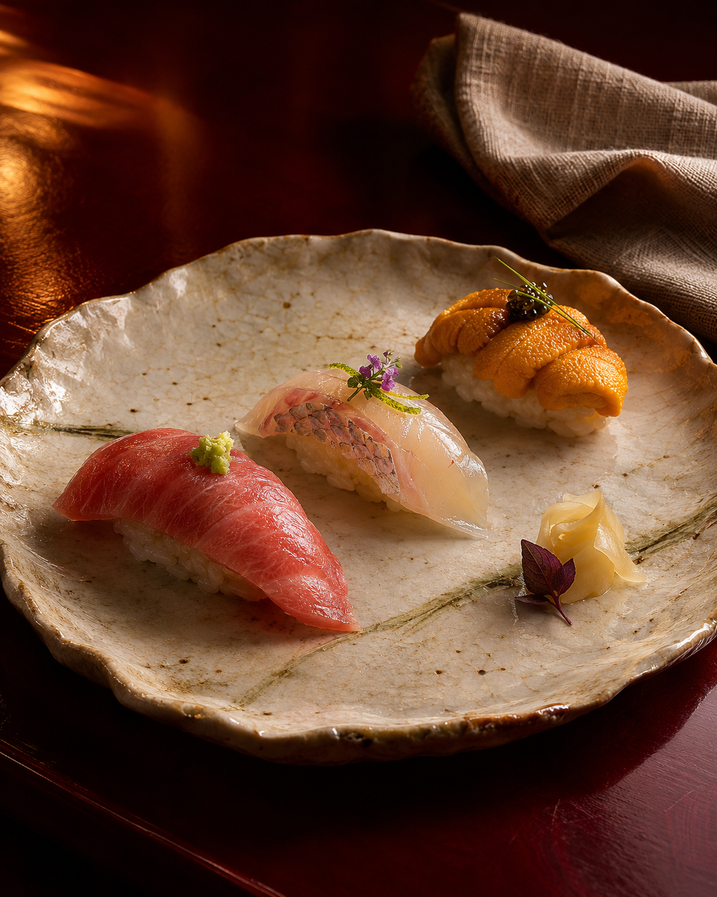
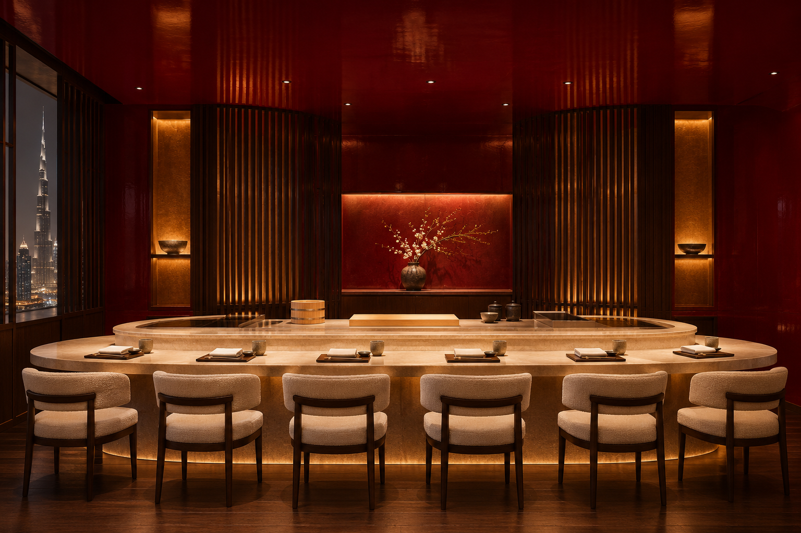

Sushi, in its most personal form.
An intimate chef’s counter in the heart of Downtown Dubai, where Japanese precision meets a singular culinary point of view.
A seat close to the art.
At JIN, the distance between chef and guest disappears. Every course unfolds across the counter, guided by season, technique, and the quiet pleasure of watching something exceptional take shape.
Discover the craft
The beauty is in every detail.
Tradition, held with curiosity.
Rooted in the discipline of Japanese cuisine and informed by a Chinese chef’s distinguished career, the experience is conceived as a conversation between cultures, ingredients, and guests.
Chef profile and credentials to be revealed with the restaurant launch.
An evening to disappear into.
Deep lacquer, warm light, and a counter designed for just a few guests. The room offers a retreat from the pace of the city, moments from its centre.

A rare evening, worth waiting for.
JIN is taking shape. Reservations and opening details will be shared when the experience is ready to welcome guests.
Return to the beginning